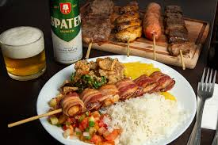

Receitas ETC

Ingredientes
Para o arroz:
- 2 xícaras de arroz
- 4 xícaras de água
- 1 dente de alho picado
- 1 colher (sopa) de óleo ou azeite
- Sal a gosto
Para o feijão:
- xícaras de feijão cozido (pode ser o carioca ou preto)
- 1/2 cebola picada
- 1 dente de alho picado
- Bacon e/ou linguiça calabresa em cubinhos (opcional)
- Sal e cheiro-verde a gosto
Para o vinagrete:
- 2 tomates picados
- 1/2 cebola picada
- 1/2 pimentão picado (opcional)
Cheiro-verde picado
- 2 colheres (sopa) de vinagre
- 3 colheres (sopa) de azeite
- Sal a gosto
Para a farofa:
- 1 colher (sopa) de manteiga ou margarina
- 1/2 cebola picada
- 1 xícara de farinha de mandioca
- Sal a gosto
- (Opcional: bacon, cenoura ralada, banana, etc.)
Para o espetinho:
- 500g de carne bovina em cubos (alcatra, maminha, fraldinha…)
-
- Sal grosso ou tempero pronto para churrasco
- Palitos de churrasco
- sal e temperos a gostos
Modo de Preparo
Arroz branco
- Refogue o alho no óleo.
- Adicione o arroz e frite por alguns minutos.
- Acrescente a água e o sal. Cozinhe até secar.
Feijão (simples ou tropeiro)
- Refogue o alho e a cebola (e o bacon/linguiça, se usar).
- junte o feijão cozido e deixe ferver um pouco. Corrija o sal.
- Se quiser estilo tropeiro, adicione farinha de mandioca e mexa até dar o ponto.
Vinagrete
- Misture todos os ingredientes em uma tigela.
- Tempere com sal, vinagre e azeite. Deixe descansar na geladeira.
Farofa
- Derreta a manteiga e refogue a cebola.
- Acrescente a farinha aos poucos, mexendo até dourar. Tempere com sal.
Espetinho de carne
- Tempere a carne com sal grosso ou tempero de churrasco.
- Espete nos palitos.
- Asse na churrasqueira, grelha ou na frigideira até dourar.
Receita da Jantinha